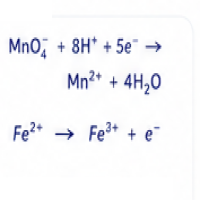
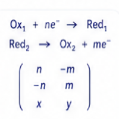
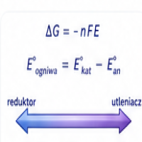
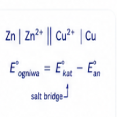
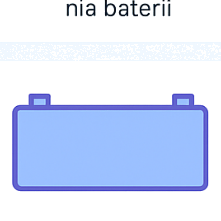
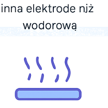

stopień utlenienia
Definicja, obliczenia z nim związane

bilanse redoks
metoda elektronowo-jonowa, środowisko kwasowe, zasadowe, obojętne. Redoksy niestechiometryczne i organiczne

inne bilanse redoks
metoda elektronowa oraz metoda macierzowa

samorzutność procesu redoks
pojęcie potencjału elektrochemicznego, moc utleniaczy i reduktorów, przewidywanie kierunku reakcji
zadania z blaszkami
blaszkę z metalu zanurzono w roztworze zawierającym jony innego metalu
zadania z blaszkami - obliczenia
To samo, tylko każą liczyć jeszcze
ogniwa galwaniczne
Budowa i działanie, przykłady obliczeń

ogniwa - zapis sztockholmski
Jak zapisać ogniwo zapisać, zamiast rysować

równanie nernsta
Dlaczego napięcie spada na skutek rozładowania baterii

nernst - przekształcenia potencjałów
jak obliczyć potencjał innej półreakcji wykorzystując równanie Nernsta

elektrody odniesienia
Dlaczego łatwiej zbudować inną elektrodę niż wodorową

elektroliza - teoria
przewidywanie procesów elektrolizy
obliczenia dotyczące przepływu ładunku
natężenie prądu, czas, prawa Faradaya itp

korozja
jak zabezpieczyć metal